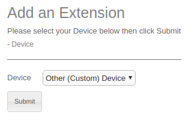
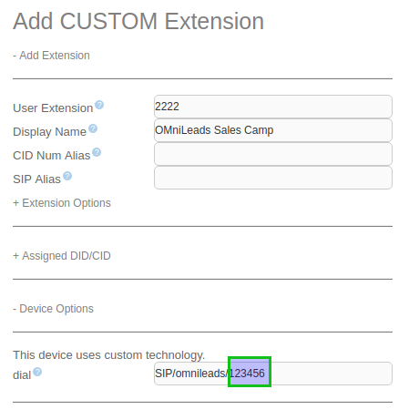
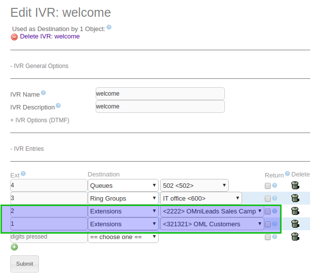

Enrutamiento de llamadas entrantes desde un PBX hacia OMniLeads¶
A la hora de enrutar llamadas desde un PBX (en nuestro ejemplo Asterisk), pero los concepto se pueden extender a cualquier tipo o marca.

Figure 1: Inbound route parameters
Lo primero que se debe definir es la numeración asignada a la ruta entrante que conmute la llamada hacia un destino de OMniLeads, ya que este número (DID de la ruta) debe ser invocado desde el PBX a la hora de derivar llamadas (desde una ruta entrante, opción del IVR o failover de alguna cola/ring group, etc.) hacia OMniLeads o bien si una extensión desea llamar o transferir una llamada hacia OMniLeads.

Figure 2: Inbound route parameters
Tomando como ejemplo el número «123456» utilizado en la figura anterior, entonces una forma de integrar esta ruta en un PBX basado en Asteisk sería que desde dicho PBX se genere una llamada hacia el número mencionado, cada vez que algún recurso del PBX necesite ser conmutado hacia este destino de OMniLeads.
Si nuestro PBX Asterisk dispone de una interfaz web de configuración entonces simplemente puedo generar una Nueva extensión y hacer que la misma apunte a; SIP/trunkomnileads/123456 , donde «trunkomnileads» es el nombre elegido (en el PBX) para el troncal SIP con OMniLeads. La idea de extensión apuntando hacia OMniLeads se ejemplifica en la figura 2.
Figure 3: OMniLeads PBX custom extension
Si bien la extension en el PBX puede tener cualquier numeración (en la figura es 2222), lo importante es enviar «123456» (en nuestro ejemplo) hacia OMniLeads como se resalta en la figura 3.
Figure 4: OMniLeads PBX custom extension
Una vez disponible la extension en el PBX, solo es cuestión de invocarla desde los elementos del PBX, como por ejemplo un IVR.
Figure 5: from IVR to OMniLeads
Si bien en la figura 4 se ejemplifica la derivación de llamadas hacia campañas entrantes de OMniLeads, desde un IVR del PBX. Podemos concluir en que también las extensiones del PBX pueden marcar o transferir llamadas a las extensiones que mapean el PBX con campañas entrantes de OMniLeads.